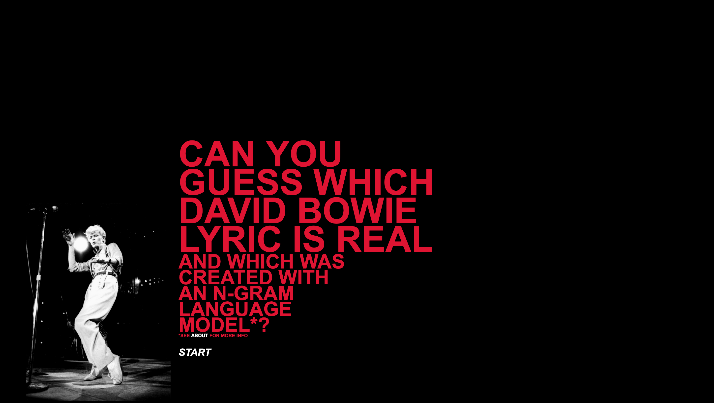
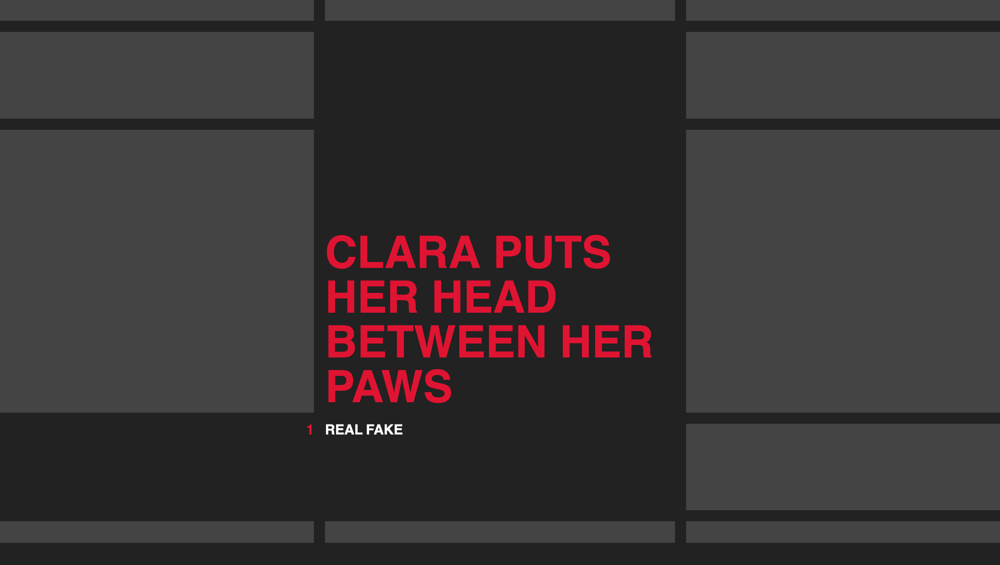

David Bowie Lyric Game
A small game I developed with my brother where you try to differentiate the real Bowie lyrics from those generated with our n-gram language model. You can play the game here.


The landing page for the game; the styling was inspired by the art direction for Bowie's Live Nassau Coliseum '76 album.
The initial css layout I set up for the site.
The site in progress.